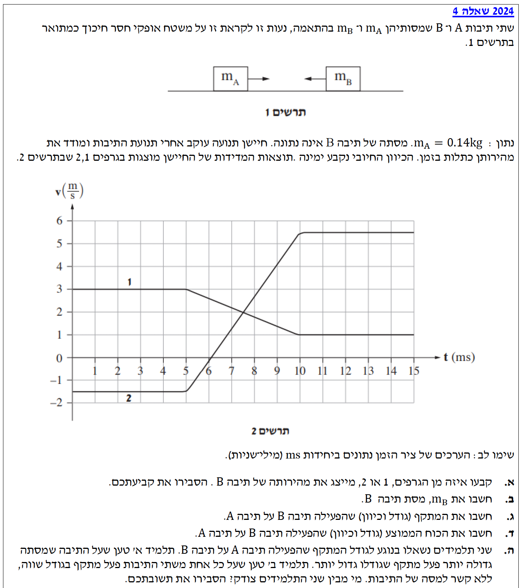

פתרון בגרות בפיזיקה - מכניקה 2024
שאלה 4
פתרון מודרך, צעד-אחר-צעד
עודכן:
--- --:--:--

[תמונת השאלה המקורית]
לא נמצאה תמונה בשם question-image.png באותה תיקייה.
מה נתון:
ישנן שתי תיבות, תיבה \(A\) ותיבה \(B\), הנעות זו לקראת זו על משטח אופקי חסר חיכוך. הכיוון החיובי נקבע ימינה. על פי תרשים 1, תיבה \(A\) נמצאת משמאל ונע ימינה, ותיבה \(B\) נמצאת מימין ונע שמאלה. מוצגים שני גרפים (1 ו-2) המתארים מהירות כפונקציה של הזמן.
מה מחפשים:
עלינו לקבוע איזה מן הגרפים, 1 או 2, מייצג את מהירותה של תיבה \(B\), ולהסביר את הקביעה.
נוסחאות ועקרונות בשימוש:
אנו משתמשים בעקרון הקינמטי של כיוון וסימן המהירות. מהירות חיובית משמעותה תנועה בכיוון החיובי של הציר, ומהירות שלילית משמעותה תנועה בכיוון המנוגד לציר.
הצבה ופתרון:
על פי תרשים 1, הכיוון החיובי מוגדר ימינה. תיבה \(A\) נעה ימינה, ולכן מהירותה ההתחלתית חייבת להיות חיובית. תיבה \(B\) נעה שמאלה (לפני ההתנגשות), ולכן מהירותה ההתחלתית חייבת להיות שלילית.
נסתכל על הגרפים בזמן \(t=0\):
גרף 1 מתחיל בערך של \(v = 3 \text{ m/s}\), כלומר ערך חיובי.
גרף 2 מתחיל בערך של \(v = -1.5 \text{ m/s}\), כלומר ערך שלילי.
לכן, גרף 2 מייצג את מהירותה של תיבה \(B\).
טיפ מורה 💡
הבנת מערכת הצירים היא המפתח לחלק גדול מבעיות הקינמטיקה. תמיד בדקו לאן מוגדר החץ החיובי של ציר המקום. סימן המהירות מספר לנו אך ורק על כיוון התנועה ביחס לאותו ציר, ולא שום דבר על כמה "מהר" הגוף נע.
מה נתון:
מסת תיבה \(A\) היא \(m_A = 0.14 \text{ kg}\). מתוך הגרפים אנו יכולים לחלץ את המהירויות לפני ואחרי ההתנגשות.
עבור תיבה \(A\) (גרף 1): מהירות התחלתית היא \(v_{Ai} = 3 \text{ m/s}\), ומהירות סופית (לאחר ההתנגשות, החל מ-\(t=10 \text{ ms}\)) היא \(v_{Af} = 1 \text{ m/s}\).
עבור תיבה \(B\) (גרף 2): מהירות התחלתית היא \(v_{Bi} = -1.5 \text{ m/s}\), ומהירות סופית היא \(v_{Bf} = 5.5 \text{ m/s}\). אין צורך בהמרת יחידות המהירות כיוון שהן נתונות ביחידות MKS תקניות (מטר לשנייה).
מה מחפשים:
אנו מחפשים את מסת תיבה \(B\), המסומנת כ-\(m_B\).
נוסחאות ועקרונות בשימוש:
נשתמש בחוק שימור התנע הקווי. מכיוון שהמשטח הוא אופקי וחסר חיכוך, שקול הכוחות החיצוניים הפועלים על מערכת שתי התיבות בציר האופקי שווה לאפס (\(\Sigma F_x = 0\)). כוח הכובד והכוח הנורמלי מתקזזים בציר האנכי. לכן התנע של המערכת נשמר לאורך ציר התנועה:
\( \vec{p} = m\vec{v} \)
\( m_A\vec{v}_A + m_B\vec{v}_B = m_A\vec{u}_A + m_B\vec{u}_B \)
(כאשר u מייצג מהירות סופית על פי דף הנוסחאות).
הצבה ופתרון:
נציב את הנתונים לתוך משוואת שימור התנע בציר ה-\(x\), תוך הקפדה על סימני המהירויות:
\[
\begin{aligned}
m_A \cdot v_{Ai} + m_B \cdot v_{Bi} &= m_A \cdot v_{Af} + m_B \cdot v_{Bf} \\
0.14 \cdot 3 + m_B \cdot (-1.5) &= 0.14 \cdot 1 + m_B \cdot 5.5 \\
0.42 - 1.5 m_B &= 0.14 + 5.5 m_B
\end{aligned}
\]
נעביר אגפים, נרכז את איברי \(m_B\) בצד אחד ואת המספרים בצד שני:
\[
\begin{aligned}
0.42 - 0.14 &= 5.5 m_B + 1.5 m_B \\
0.28 &= 7 m_B \\
m_B &= \frac{0.28}{7} = 0.04 \text{ kg}
\end{aligned}
\]
מסת תיבה \(B\) היא: \(m_B = 0.04 \text{ kg}\).
טיפ מורה 💡
שימו לב כיצד הצבנו את המהירות השלילית \((-1.5)\) בתוך המשוואה! לעולם אל תשכחו את סימני המהירויות, התנע הוא גודל וקטורי ולכיוונים יש משמעות קריטית בפתרון. בנוסף, חשוב להסביר מדוע התנע נשמר - תמיד ציינו שאין כוחות חיצוניים בציר האופקי.
מה נתון:
אנו יודעים את מסת תיבה \(A\) שהיא \(0.14 \text{ kg}\), ואת מהירויותיה לפני ההתנגשות \(v_{Ai} = 3 \text{ m/s}\) ואחריה \(v_{Af} = 1 \text{ m/s}\).
מה מחפשים:
אנו מחפשים את המתקף (גודל וכיוון) שהפעילה תיבה \(B\) על תיבה \(A\).
נוסחאות ועקרונות בשימוש:
על פי משפט מתקף-תנע, המתקף השקול שפועל על גוף שווה לשינוי בתנע שלו. מכיוון שהכוח היחיד שפועל על תיבה \(A\) בציר האופקי הוא הכוח מתיבה \(B\), מתקף כוח זה שווה לשינוי בתנע של \(A\):
\( \vec{J}_{net} = \Delta\vec{p} \)
\( \Delta\vec{p} = m\vec{v}_f - m\vec{v}_i \)
הצבה ופתרון:
נחשב את השינוי בתנע של תיבה \(A\), שייצג את המתקף \(\vec{J}_A\):
\[
\begin{aligned}
J_A &= m_A \cdot v_{Af} - m_A \cdot v_{Ai} \\
J_A &= m_A \cdot (v_{Af} - v_{Ai}) \\
J_A &= 0.14 \cdot (1 - 3) \\
J_A &= 0.14 \cdot (-2) = -0.28 \text{ N} \cdot \text{s}
\end{aligned}
\]
הסימן השלילי מצביע על כך שווקטור המתקף פועל בכיוון המנוגד לכיוון החיובי (כלומר, שמאלה).
גודל המתקף הוא \(0.28 \text{ N} \cdot \text{s}\), וכיוונו שמאלה (נגד הכיוון החיובי).
טיפ מורה 💡
האם התשובה הגיונית? בודאי! תיבה \(B\) מגיעה מימין ומתנגשת בתיבה \(A\). ברור שהכוח שהיא מפעילה על \(A\) (ולכן גם המתקף) יהיה דוחף שמאלה. תמיד כדאי לעשות בדיקת "היגיון פיזיקלי" בסוף החישוב.
מה נתון (שלב המרת היחידות - חובה!):
חישבנו בסעיף הקודם כי המתקף על תיבה \(A\) הוא \(J_A = -0.28 \text{ N}\cdot\text{s}\). מתוך הגרף, אנו יכולים לראות את משך זמן ההתנגשות. ההתנגשות (שינוי המהירות) מתחילה ב-\(t_1 = 5 \text{ ms}\) ומסתיימת ב-\(t_2 = 10 \text{ ms}\).
לכן, פרק הזמן של ההתנגשות הוא \(\Delta t = 10 - 5 = 5 \text{ ms}\).
המרה ל-MKS: מילישניות אינן תקניות. חובה להמיר לשניות:
\(\Delta t = 5 \text{ ms} = 5 \times 10^{-3} \text{ s} = 0.005 \text{ s}\).
מה מחפשים:
אנו מחפשים את הכוח הממוצע (גודל וכיוון) שהפעילה תיבה \(B\) על תיבה \(A\) במהלך ההתנגשות.
נוסחאות ועקרונות בשימוש:
לפי הגדרת מתקף של כוח קבוע (או ממוצע):
\( \vec{J} = \vec{\bar{F}} \cdot \Delta t \)
הצבה ופתרון:
נחלץ את הכוח הממוצע \(\bar{F}_A\) מהמשוואה:
\[
\begin{aligned}
\bar{F}_A &= \frac{J_A}{\Delta t} \\
\bar{F}_A &= \frac{-0.28}{5 \times 10^{-3}} \\
\bar{F}_A &= -56 \text{ N}
\end{aligned}
\]
שוב, הסימן השלילי מציין את הכיוון.
גודל הכוח הממוצע הוא \(56 \text{ N}\), וכיוונו שמאלה.
טיפ מורה 💡
ניתן היה לפתור סעיף זה גם בדרך קינמטית הממחישה את הקשר ההדוק לחוק השני של ניוטון! מאחר והגרף בזמן ההתנגשות הוא קו ישר, שיפועו קבוע ולכן התאוצה קבועה.
נחשב את התאוצה של תיבה A (לפי שיפוע הגרף): \( a = \frac{\Delta v}{\Delta t} = \frac{1 - 3}{0.005} = -400 \text{ m/s}^2 \).
כעת נציב בחוק השני של ניוטון: \( \Sigma F = m \cdot a = 0.14 \cdot (-400) = -56 \text{ N} \).
אותה תוצאה בדיוק! משפט מתקף-תנע (\(F \cdot \Delta t = m \cdot \Delta v\)) הוא למעשה דרך אלגנטית ומקוצרת לכתוב את החוק השני של ניוטון יחד עם הגדרת התאוצה.
מה נתון:
תלמיד א' טוען: "על התיבה בעלת המסה הגדולה יותר פעל מתקף גדול יותר".
תלמיד ב' טוען: "על שתי התיבות פעל מתקף שווה בגודלו, ללא קשר למסת התיבות".
מה מחפשים:
לקבוע מי מבין שני התלמידים צודק, ולהסביר את התשובה.
נוסחאות ועקרונות בשימוש:
הפתרון לסעיף זה נשען על החוק השלישי של ניוטון (חוק הפעולה והתגובה), ועל הגדרת המתקף. על פי החוק השלישי של ניוטון, הכוח שגוף א' מפעיל על גוף ב' שווה בגודלו ומנוגד בכיוונו לכוח שגוף ב' מפעיל על גוף א': \(\vec{F}_{AB} = -\vec{F}_{BA}\).
הצבה ופתרון:
בזמן ההתנגשות, שתי התיבות נוגעות זו בזו למשך בדיוק אותו פרק זמן \(\Delta t\). לפי החוק השלישי של ניוטון, בכל רגע ורגע הכוח שמפעילה \(B\) על \(A\) שווה בגודלו והפוך בכיוונו לכוח שמפעילה \(A\) על \(B\).
מכיוון שהכוחות שווים בגודלם לאורך כל זמן ההתנגשות, ופרק הזמן משותף, גם האינטגרל של הכוח על פני הזמן (שהוא המתקף) יהיה שווה בגודלו והפוך בכיוונו:
\[
\begin{aligned}
\vec{J}_A &= \vec{\bar{F}}_{BA} \Delta t \\
\vec{J}_B &= \vec{\bar{F}}_{AB} \Delta t \\
\vec{J}_A &= -\vec{J}_B \implies |\vec{J}_A| = |\vec{J}_B|
\end{aligned}
\]
לכן, המתקפים שווים בגודלם תמיד, ללא שום קשר למסת הגופים המתנגשים.
תלמיד ב' הוא הצודק. לפי החוק השלישי של ניוטון, הכוחות הפנימיים שווים בגודלם, ומכיוון שזמן הפעולה זהה, גם המתקפים שווים בגודלם ללא תלות במסה.
טיפ מורה 💡
זהו אחד מהמסיחים הנפוצים ביותר בפיזיקה! האינטואיציה היומיומית שלנו אומרת ש"גוף גדול מכה חזק יותר". אך בפיזיקה, הכוח הוא הדדי. המסה הגדולה יותר לא קובעת כוח גדול יותר, אלא גורמת לכך שאותו כוח בדיוק יגרום לגוף הכבד לשינוי מהירות (תאוצה) קטן יותר בהשוואה לגוף הקל. שימו לב: המתקף שווה, השינוי בתנע שווה, אבל השינוי במהירות שונה לחלוטין (כפי שראינו בגרפים, מהירות \(B\) השתנתה בהרבה יותר ממהירות \(A\) משום שמסתה קטנה יותר).